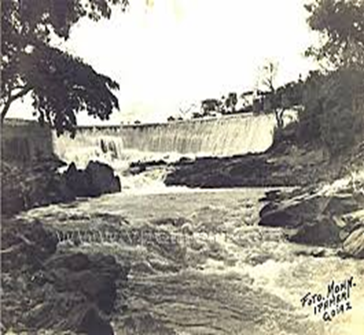
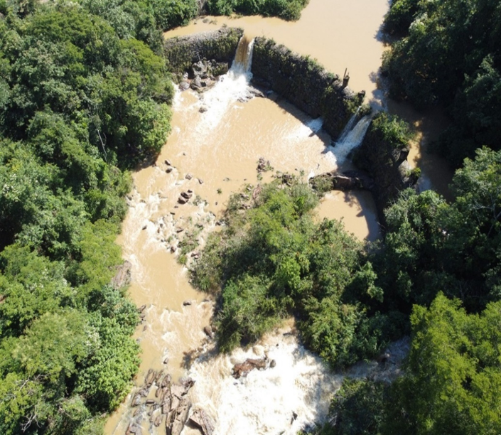
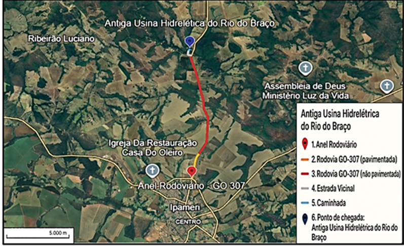
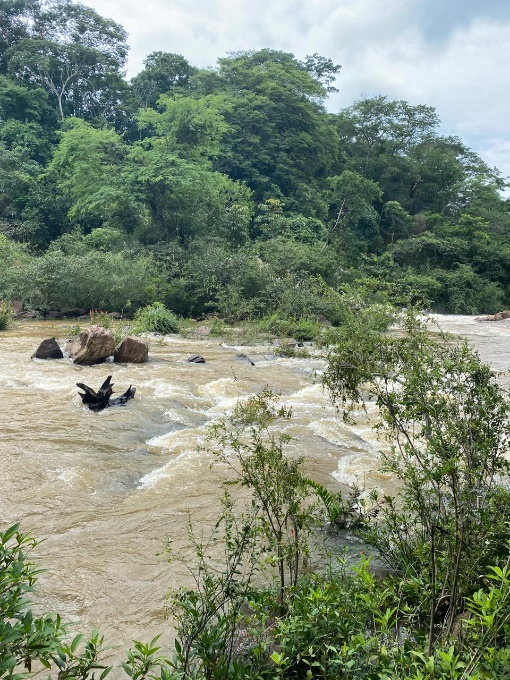
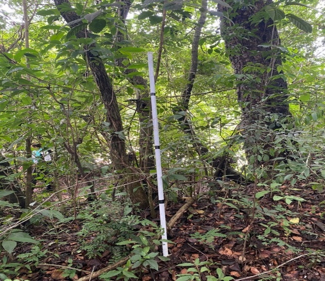
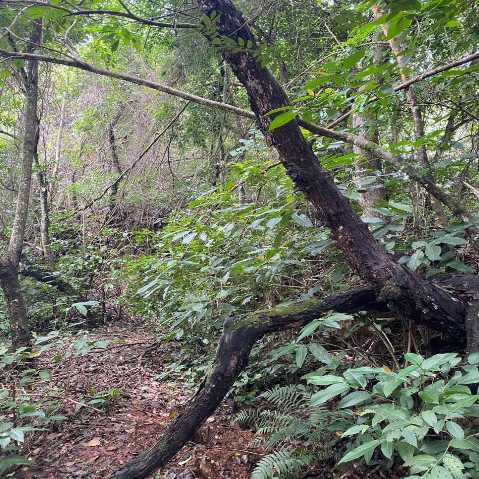
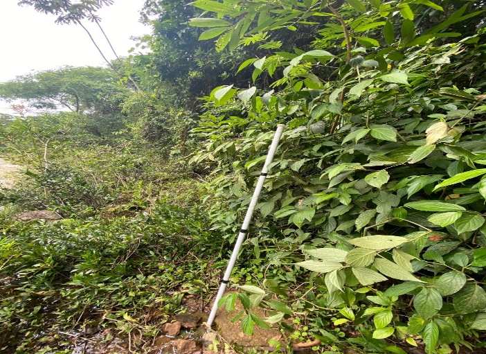
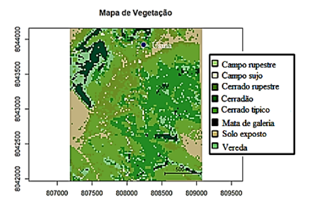

Antiga Usina Hidrelétrica do Rio do Braço
A Antiga Usina Hidrelétrica do Rio do Braço, localizada a cerca de 10 km do centro urbano de Ipameri-GO, é um importante marco histórico para o município e para o estado de Goiás. Inaugurada como a primeira usina hidrelétrica do estado, a estrutura foi responsável, durante décadas, pelo abastecimento de energia elétrica da cidade. Atualmente, encontra-se desativada, porém, seu espaço segue sendo amplamente utilizado pela comunidade ipamerina como área de lazer, pesca e banho, preservando sua relevância cultural, histórica e ambiental para a população local.

Autor: Carlos Rodolfo Mohn


Crédito: Jair de Souza Júnior
Diferente de trilhas que exigem percurso a pé ou maior esforço físico, o atrativo da Antiga Usina do Rio do Braço consiste essencialmente em sua beleza paisagística e no uso recreativo do local. De acesso bastante facilitado, o visitante chega de carro até o local sem dificuldades, sendo uma área plana, com altitude aproximada de 780 metros acima do nível do mar e de nível de dificuldade considerado fácil para deslocamento e permanência no espaço. No contexto do turismo ecopedagógico e de atividades de campo, o local comporta grupos de aproximadamente 30 alunos, constituindo-se em espaço propício para observação da paisagem, realização de registros fotográficos e desenvolvimento de práticas educativas ao ar livre.
Atenção e Recomendações
- O banho não é recomendado, devido à presença de correnteza forte, exigindo atenção redobrada quanto à segurança.
- Para a visita, sugere-se o uso de vestuário confortável e apropriado para ambientes naturais, calçados fechados e resistentes, além de proteção contra a exposição solar e insetos.
- Recomenda-se, ainda, postura responsável quanto à manutenção da área, evitando qualquer descarte inadequado de resíduos e adotando práticas de cuidado com o espaço visitado.
A Tabela 1 apresenta informações sobre as distâncias totais do percurso (cerca de 7,6 km, com partida do anel rodoviário - GO 307), conforme cada via.
| Tipo de via | Distância |
|---|---|
| Rodovia GO-307 – pavimentada | 1,43 Km |
| Rodovia GO-307 - sem pavimentação | 5,61 Km |
| Estrada Vicinal - sem pavimentação | 0,43 Km |
| Caminhada | 0,12 Km |
A Figura 4 mostra uma imagem de satélite da região e do trajeto completo da Trilha da Antiga Usina do Rio do Braço.



Figuras 5 e 6. Registros da vegetação predominante da região (dezembro de 2024).
A vegetação do entorno da Usina do Rio do Braço é marcada por formações típicas do bioma Cerrado, com destaque para o Cerrado típico e o Cerradão, que juntos somam mais de 70% da cobertura da área analisada. Além destas, destacam-se pequenas porções de Veredas e Mata de galeria, essenciais para a manutenção da biodiversidade e dos recursos hídricos locais.
A seguir, apresenta-se o quadro comparativo da vegetação entre os anos de 2016 e 2024, para análise das mudanças ao longo desse período.
| Ano | Campo rupestre | Campo sujo | Cerrado rupestre | Cerradão | Cerrado típico | Mata de galeria | Solo exposto | Vereda |
|---|---|---|---|---|---|---|---|---|
| 2016 | 0,08% | 1,01% | 24,07% | 25,39% | 25,31% | 11,24% | 5,92% | 6,94% |
| 2024 | 0,08% | 0,93% | 13,68% | 24,37% | 34,90% | 6,22% | 10,54% | 9,24% |


A figura 9 apresenta o mapa de cobertura vegetal da área referente à Trilha da Antiga Usina Hidrelétrica do Rio do Braço, para 2024.

A figura acima auxilia na visualização do padrão espacial da vegetação predominante, que é o Cerrado típico e o Cerradão.
3.3.1 Interpretação das Mudanças na Vegetação (2016–2024)
O Cerrado típico apresentou um crescimento expressivo, passando de 25,31% em 2016 para 34,90% em 2024, evidenciando a tendência natural de regeneração e adensamento dessa fitofisionomia, que é característica marcante do bioma Cerrado.
Por outro lado, o Cerrado rupestre apresentou uma redução significativa, passando de 24,07% em 2016 para 13,68% em 2024, o que pode indicar um processo natural de substituição dessas áreas mais abertas por formações mais densas, como o Cerrado típico e o Cerradão. As Matas de galeria também reduziram seu percentual, passando de 11,24% para 6,22%, uma variação que pode estar relacionada a fatores sazonais ou às limitações metodológicas do modelo de classificação utilizado.
Outro aspecto relevante é o aumento expressivo da área de Solo exposto, que praticamente triplicou, passando de 5,92% para 10,54%, possivelmente em função de variações sazonais, ações antrópicas pontuais ou mesmo falhas no modelo de sensoriamento remoto.
As oscilações observadas nos dados reforçam a necessidade de análises contínuas e criteriosas, respeitando as limitações dos modelos de classificação remota e o próprio ritmo natural de transformação do Cerrado.
Por fim, é importante destacar que as discrepâncias observadas, bem como as oscilações de algumas fitofisionomias, como Solo exposto ou Cerrado rupestre, podem ser atribuídas às limitações do modelo utilizado para a classificação da vegetação. Nenhuma metodologia apresenta 100% de precisão, e fatores como condições atmosféricas, período de coleta das imagens e eventuais falhas no processamento dos dados influenciam diretamente os resultados apresentados.